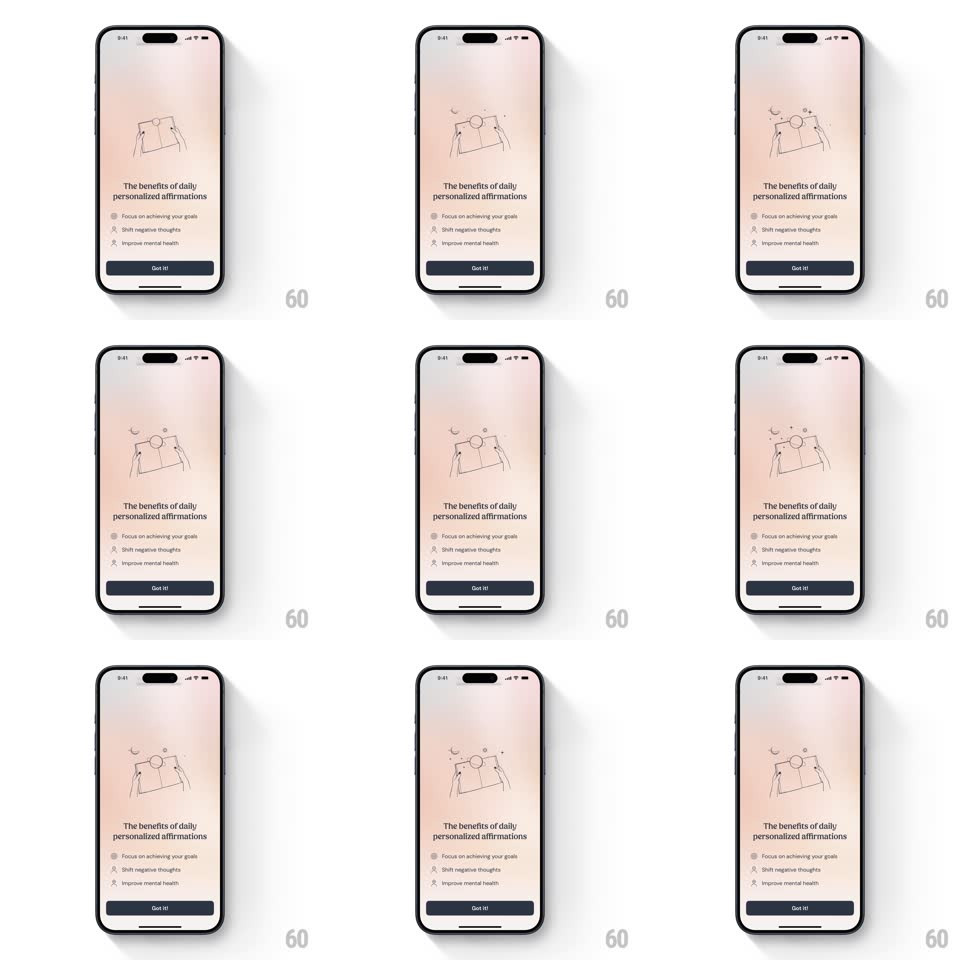

Media
Frame-by-frame

Rebuild this animation 1:1: I am's feature screen - on a soft peach gradient, a line illustration of hands raising a phone toward sun and moon draws itself in, then floats gently while the benefit checklist fades in below.

Rebuild this animation 1:1: I am's feature screen - on a soft peach gradient, a line illustration of hands raising a phone toward sun and moon draws itself in, then floats gently while the benefit checklist fades in below. ## Integration Integration: stack-agnostic spec - springs given as stiffness/damping, timed motions as duration + curve; map every value to your framework and animation library of choice. ## Scene Peach-blush gradient screen: a delicate line illustration (two hands holding a phone/photo, small sun, moon, and stars around it), the title "The benefits of daily personalized affirmations", a checklist (Focus on achieving your goals, Shift negative thoughts, Improve mental health), and a dark "Got it!" pill. ## Motion spec Pattern: draw-on illustration, ~2s build. - Draw: the illustration strokes on (SVG stroke draw, 1.2s, ease-in-out) - hands first, phone second, celestial details last. - Float: once drawn, the sun/moon/stars drift in slow loops (translateY +-4px, rotate +-5deg, 3s, offset phases). - Text: the title fades up (300ms, +400ms), checklist rows stagger in (150ms apart, 250ms, 10px rise), and the button fades in last (250ms). - Press: "Got it!" scales to 0.96 on touch (100ms) and springs back. ## Calibration - The draw-on order follows the visual hierarchy: subject, object, decoration. - The checklist icons are tinted circles that fill as each row lands. ## Reduced motion Illustration fades in fully drawn (300ms); no float loop. ## Don't miss - The illustration is single-weight black line art - no fills except the celestial accents. - The gradient is warm and static; the illustration does all the moving.